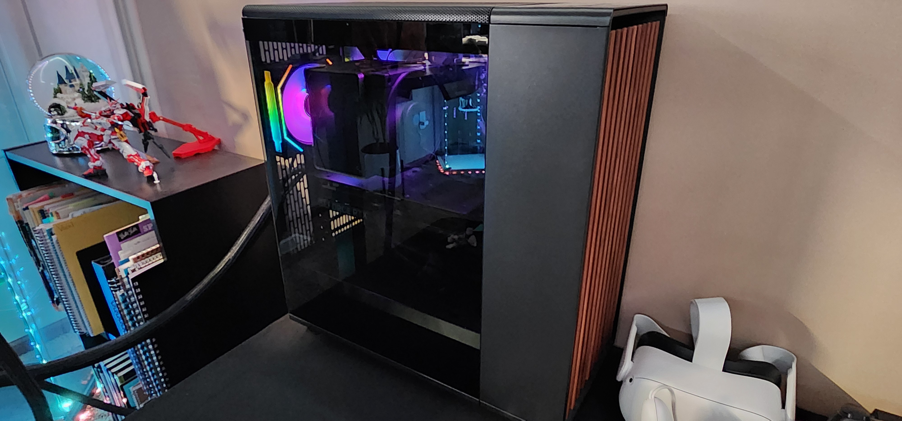
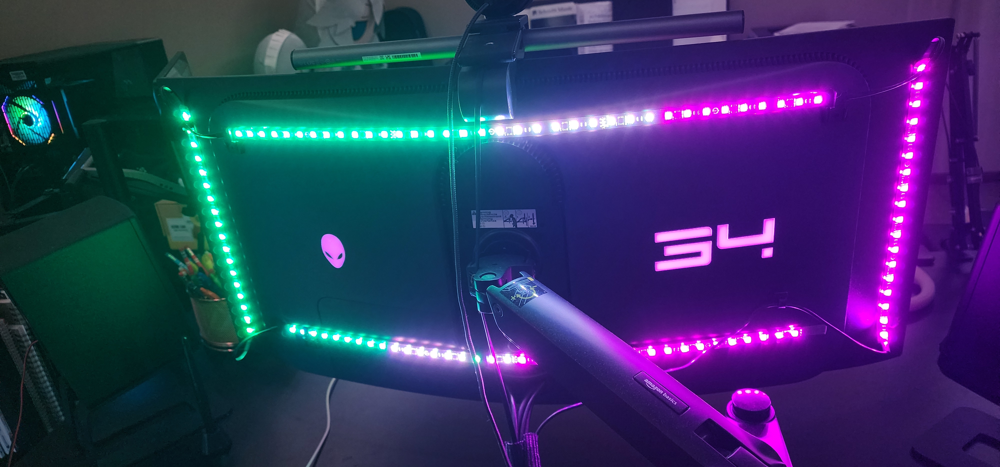

The Setup

The capital and largest city of both England and the United Kingdom, with a population of 8,866,180 in 2022. Its wider metropolitan area is the largest in Western Europe, with a population of 14.9 million. London stands on the River Thames in southeast England, at the head of a 50-mile (80 km) tidal estuary down to the North Sea, and has been a major settlement for nearly 2,000 years. Its ancient core and financial centre, the City of London, was founded by the Romans as Londinium and has retained its medieval boundaries. The City of Westminster, to the west of the City of London, has been the centuries-long host of the national government and parliament. London grew rapidly in the 19th century, becoming the world's largest city at the time. Since the 19th century, the name "London" has referred to the metropolis around the City of London, historically split between the counties of Middlesex, Essex, Surrey, Kent, and Hertfordshire, which since 1965 has largely comprised the administrative area of Greater London, governed by 33 local authorities and the Greater London Authority.
Computer

The capital and largest city of both England and the United Kingdom, with a population of 8,866,180 in 2022. Its wider metropolitan area is the largest in Western Europe, with a population of 14.9 million. London stands on the River Thames in southeast England, at the head of a 50-mile (80 km) tidal estuary down to the North Sea, and has been a major settlement for nearly 2,000 years. Its ancient core and financial centre, the City of London, was founded by the Romans as Londinium and has retained its medieval boundaries. The City of Westminster, to the west of the City of London, has been the centuries-long host of the national government and parliament. London grew rapidly in the 19th century, becoming the world's largest city at the time. Since the 19th century, the name "London" has referred to the metropolis around the City of London, historically split between the counties of Middlesex, Essex, Surrey, Kent, and Hertfordshire, which since 1965 has largely comprised the administrative area of Greater London, governed by 33 local authorities and the Greater London Authority.
Graphics Card
The name London is believed to derive from the Latin word "Londinium," which was used during Roman times. Some theories suggest it may also come from Celtic words meaning "wild" or "ferocious" and "fortress," reflecting the city's historical significance.
CPU
The name London is believed to derive from the Latin word "Londinium," which was used during Roman times. Some theories suggest it may also come from Celtic words meaning "wild" or "ferocious" and "fortress," reflecting the city's historical significance.
RAM
The name London is believed to derive from the Latin word "Londinium," which was used during Roman times. Some theories suggest it may also come from Celtic words meaning "wild" or "ferocious" and "fortress," reflecting the city's historical significance.
Storage
The name London is believed to derive from the Latin word "Londinium," which was used during Roman times. Some theories suggest it may also come from Celtic words meaning "wild" or "ferocious" and "fortress," reflecting the city's historical significance.
Cooler + Fans
The name London is believed to derive from the Latin word "Londinium," which was used during Roman times. Some theories suggest it may also come from Celtic words meaning "wild" or "ferocious" and "fortress," reflecting the city's historical significance.
PSU
The name London is believed to derive from the Latin word "Londinium," which was used during Roman times. Some theories suggest it may also come from Celtic words meaning "wild" or "ferocious" and "fortress," reflecting the city's historical significance.
Mootherboard
The name London is believed to derive from the Latin word "Londinium," which was used during Roman times. Some theories suggest it may also come from Celtic words meaning "wild" or "ferocious" and "fortress," reflecting the city's historical significance.
Case
The name London is believed to derive from the Latin word "Londinium," which was used during Roman times. Some theories suggest it may also come from Celtic words meaning "wild" or "ferocious" and "fortress," reflecting the city's historical significance.
Table
Keyboard

A splendid mixture of architectural styles, Westminster Abbey is considered the finest example of Early English Gothic. It's not merely a beautiful place of worship – the Abbey is still a working church and the stage on which history unfolds. Never a cathedral (the seat of a bishop), Westminster Abbey is what is called a "royal peculiar", administered by the Crown.
Mice

This state-of-the-art 62,300-seat stadium in Tottenham, with a retractable pitch that hosts both 'real’ and American football games, opened in April 2019 replacing the White Hart Lane ground (in place since 1899) and costing upwards of £850 million to build. Even if you're not a Spurs supporter or even a fan of either game, you may want to visit what could be called the Eighth Wonder of the World.
Speakers and Headphones

Consisting of low-slung red-brick terraces and fronted by a large piazza with an oversized statue of Sir Isaac Newton, Colin St John Wilson’s British Library building is an architectural wonder. Completed in 1998, it's home to some of the greatest treasures of the written word, including the Codex Sinaiticus (the first complete text of the New Testament), Leonardo da Vinci's notebooks and two copies of the Magna Carta (1215).
Monitor
This state-of-the-art 62,300-seat stadium in Tottenham, with a retractable pitch that hosts both 'real’ and American football games, opened in April 2019 replacing the White Hart Lane ground (in place since 1899) and costing upwards of £850 million to build. Even if you're not a Spurs supporter or even a fan of either game, you may want to visit what could be called the Eighth Wonder of the World.
RBG Monitor Light
this is my epic text. aaaaaaaaaaaahhhhhhhhhhhhhhhhh
